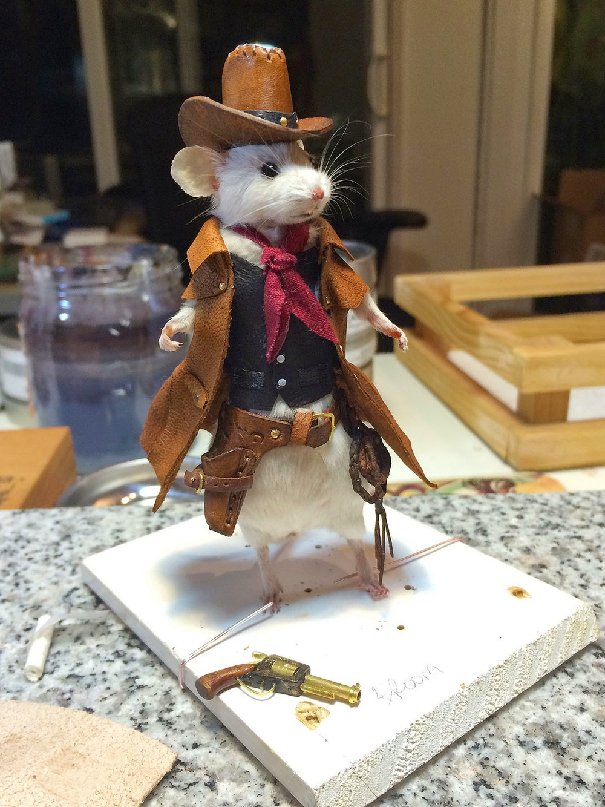

Rain in Albuquerque

1. Sailboat Blues
Your browser does not support the audio element.
2.Amo a Mi Abuela (I Love My Grandmother)
Your browser does not support the audio element.
3. How Long Does It Take?
Your browser does not support the audio element.
4. Papa's Poem
Your browser does not support the audio element.
5. Papa's Poem Part Two (Farewell)
Your browser does not support the audio element.
Created by Joe, Jake and Corin
Thank You